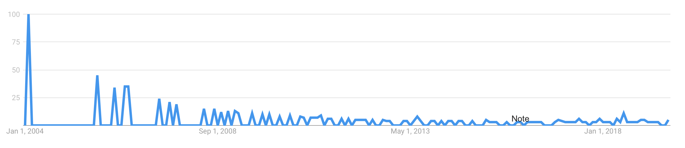
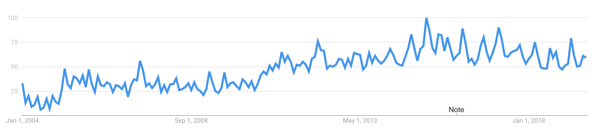
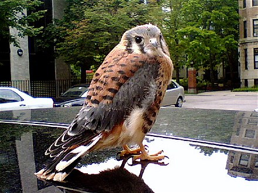
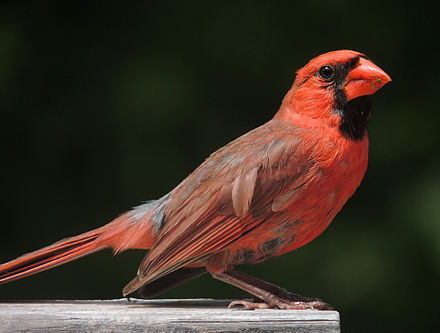
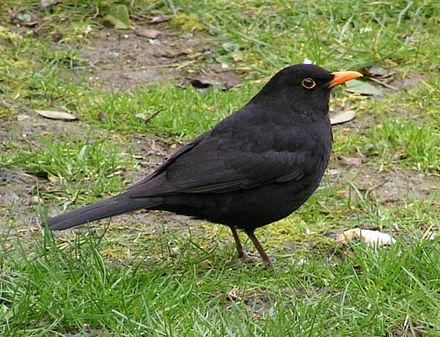
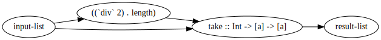
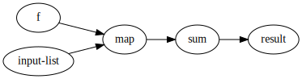

There is none. They are mostly of point-free!
.
or
as in point-free programming,
a point is a function argument
public static final void myFunction(String x) {...}
↑
== tacit programming
a programming paradigm in which function definitions do not identify the arguments (or "points") on which they operate. Instead the definitions merely compose other functions, among which are combinators that manipulate the arguments.
unix pipes
echo "hello old" | tr "h" "H" | sed s/old/world/
which in Java could be:
Function<String,String> f1 = str -> str.replace('h', 'H');
Function<String,String> f2 = str -> str.replace("old", "world");
f1.andThen(f2).apply("hello old");
Haskell
keepEven list = filter (\x -> x `mod` 2 == 0) list
keepEvenPointFree = filter (\x -> x `mod` 2 == 0)
keepEvenEvenMorePointFree = filter ((== 0) . (`mod` 2))
If you know Haskell and partial application,
the last one is perfectly readable.
== eta-reduction and eta-abstraction
Point-free style can be obtained via eta-reduction:
\x -> abs x ==> abs
The opposite of eta-abstraction:
abs ==> \x -> abs x
Conversion to (at least some) point-free form can be automated: http://pointfree.io
keepHalf list = take (length list `div` 2) list
> nix-shell -p haskellPackages.pointfree --run \
"pointfree -v '\list -> take (length list \`div\` 2) list'"
keepHalfPointFree = ap (take . flip (div . length) 2) id
🤔 Wait a second, that doesn’t look simple or easy!
Point-free style can (clearly) lead to Obfuscation when used unwisely. ... Perhaps these are why pointfree style is sometimes (often?) referred to as pointless style.
https://trends.google.com/trends/explore?date=all&q=point-free
https://trends.google.com/trends/explore?date=all&q=tacit%20programming
Uh, didn't look too good...
https://trends.google.com/trends/explore?date=all&q=combinator
Let’s use this one!
A function or definition with no free variables == A pure lambda-expression that refers only to its arguments
https://wiki.haskell.org/Combinator
A combinator is a higher-order function that uses only function application and earlier defined combinators to define a result from its arguments.
https://en.wikipedia.org/wiki/Combinatory_logic
\a -> a
\a -> \b -> a
\f -> \a -> \b -> f b a
It is perhaps surprising that lambda-calculus can represent any conceivable computation using only the simple notions of function abstraction and application based on simple textual substitution of terms for variables. But even more remarkable is that abstraction is not even required. Combinatory logic is a model of computation equivalent to lambda calculus, but without abstraction.
no abstraction == no creation of lambdas
== no function arguments
But the example combinators on the previous slide were lambdas themselves!?!
Yes, but we assume that there exists a primitive set of combinators, from which more can be built without lambda abstraction.
Lambda calculus is sometimes also called λK-calculus, meaning that in combinator logic there’s a K combinator involved.
K x y = xK is cancellative, it doesn’t use one of it’s arguments.
In λI-calculus, there’s no K
(that is, all arguments must be used)
Single-letter-names are a bit mathy.
Raymond m. Smullyan: To Mock a Mockingbird

By Ryser915 at English Wikipedia, CC BY-SA 3.0, Link
By Yathin S Krishnappa - Own work, CC BY-SA 3.0, Link

By Dakota L. - Own work, CC BY-SA 3.0, Link
By Dehaan - Own work, CC BY-SA 3.0, Link

By Juan Emilio from Las Palmas de Gran Canaria, España - Mirlo. (Turdus merula cabrerae.)(♂)Uploaded by Snowmanradio, CC BY-SA 2.0, Link
keepHalf list = take (length list `div` 2) list
keepHalfPointFree = ap (take . flip (div . length) 2) id
phoenix == pass a single value through two different functions,
and pass the results to a two-parameter function
phoenix x y z w = x (y w) (z w)
keepHalfCombi = phoenix take ((`div` 2) . length) id
starling == pass a single value straight and also through a function, to a two-parameter function
starling = x y z = x z (y z)
keepHalfCombi2 = starling (flip take) ((`div` 2) . length)
cardinal' == pass first argument straight, and second argument through a function,
to a two-parameter function
warbler == elementary duplicator
cardinal' x y z w = x (y w) z
warbler x y = x y y
keepHalfCombi3 = warbler $ cardinal' take ((`div` 2) . length)
There might be a day, when these are taught in the universities and we all know all these combinators by heart!
...meanwhile, is there something easier?
Starling == Applicative's (<*>) on functions
Like ordinary application of take with two arguments:
keepHalf list = take (length list `div` 2) list
but instead we use kind of lifted function application,
syntactically with operators <$> and <*>:
keepHalfApplicative = take <$> ((`div` 2) . length) <*> id
This is actually readable!
By abstracting over function application in our language, we might not even need the operators...
Can be visualised as data flow

nix-shell --pure -p graphviz --run 'echo "digraph g{\
rankdir=\"LR\";\
\"input-list\" -> \"((\`div\` 2) . length)\";\
\"((\`div\` 2) . length)\" -> \"take :: Int -> [a] -> [a]\";\
\"input-list\" -> \"take :: Int -> [a] -> [a]\";\
\"take :: Int -> [a] -> [a]\" -> \"result-list\"\
}" | dot -Tsvg > graph.svg'
Imagine your editor/IDE to automatically visualize all Applicative-function usages with this kind of (even interactive) graphics!
Each previous example had something awkward
missingBird :: (b -> a -> c) -> (a -> b) -> a -> c
missingBird x y z = x (y z) z
keepHalfCombi4 = missingBird take ((`div` 2) . length)
I couldn't find references to this kind of combinator...?
-- from Haskell base:
sortBy :: (a -> a -> Ordering) -> [a] -> [a]
someListOfTuples = [(1,'a'), (2,'b')]
sortedByNumberVerbose = sortBy (\t1 t2 -> compare (fst t1) (fst t2)) someListOfTuples
Do we happen to have a combinator for:
Pass both parameters through same function,
and pass the results to a two-parameter function?
psi x y z w = x (y z) (y w)
sortedByNumberCombinator = sortBy (psi compare fst) someListOfTuples
This need was recognised ages ago
There’s already a psi bird with a different name in Haskell base: on
-- http://hackage.haskell.org/package/base/docs/Data-Function.html#v:on
sortedByNumberOn = sortBy (compare `on` fst) someListOfTuples
nix-shell --pure -p graphviz --run 'echo "digraph g{\
rankdir=LR;\
\"compare\" -> \"on :: (b -> b -> Ordering) -> (a -> b) -> a -> a -> Ordering\";\
\"fst\" -> \"on :: (b -> b -> Ordering) -> (a -> b) -> a -> a -> Ordering\";\
\"on :: (b -> b -> Ordering) -> (a -> b) -> a -> a -> Ordering\" -> \"sortBy :: (a -> a -> Ordering) -> [a] -> [a]\";\
\"input-list\" -> \"sortBy :: (a -> a -> Ordering) -> [a] -> [a]\";\
\"sortBy :: (a -> a -> Ordering) -> [a] -> [a]\" -> \"result-list\"\
}" | dot -Tsvg > graph2.svg'
"Point-Free or Die: Tacit Programming in Haskell and Beyond" by Amar Shah
aggregation == first map over the function f,
then sum the resulting numbers
aggregate f list = sum (map f list)
in point-free style?
aggregate f = sum . map f
aggregate = (sum .) . map
Would we happen to have a combinator for:
pass two parameters to a two-parameter function, and then pass the result to a one-parameter function?
blackbird x y z w = x (y z w)
blackbird == composition of composition and composition
(.) . (.)
Yeah right, but the visualisation is clear
A function with the same type signature as blackbird happens to be defined in multiple Hackage packages with different name.
Could it be useful to have it defined in base with a suitable name, like that suggested by Amar Shah:
f ... g = (f .) . g
Forget that cutting edge JavaScript framework!
Learn you a fundamental tool for great good!
Thank you.
{kind=link}
.jpg#/media/File:Psophocichla_litsitsirupa_(Etosha).jpg){kind=link}
{kind=link}
{kind=link}
.jpg#/media/File:Turdus_merula_-Gran_Canaria,_Canary_Islands,_Spain-8_(2).jpg){kind=link}